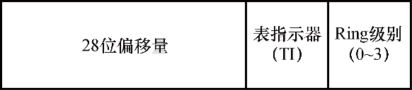

诸如C/C++和Rust等高级编程语言会被编译为机器代码，通常可称之为汇编语言或汇编代码。借助这种低级语言可直接访问处理器寄存器。通常程序可访问以下三种主要类型的寄存器（调试代码时可见）：
● 程序计数器（Program Counter，PC），在x86/x64架构中可将其称为指令指针（Instruction Pointer，IP），由EIP（x86）和RIP（x64）寄存器所代表。该寄存器始终指向正在执行的汇编代码行（某些32位ARM架构存在例外情况）。
● 栈指针（Stack Pointer，SP），由ESP（x86）和RSP（x64）寄存器所代表。该寄存器会指向保存了当前栈位置的内存位置。
● 其他通用寄存器（General Purpose Register，GPR），包括但不限于EAX/RAX、ECX/RCX、EDX/RDX、ESI/RSI及R8、R14等寄存器。
虽然这些寄存器可包含指向内存的地址值，但在访问内存位置时还需要其他寄存器的介入，这是一种称为受保护模式段（protected mode segmentation）的机制。为此需要检查各种段寄存器，此类寄存器亦可称为选择器（selector）：
● 所有针对程序计数器的访问首先需要检查代码段（Code Segment，CS）寄存器。
● 所有针对栈指针的访问首先需要检查栈段（Stack Segment，SS）寄存器。
● 对其他寄存器的访问由段重写（Override）决定，段重写所用的编码方式可强制针对特定寄存器进行检查，如数据段（Data Segment，DS）、扩展段（Extended Segment，ES）或F段（F Segment，FS）。
这些选择器位于16位段寄存器中，可在一种名为全局描述符表（Global Descriptor Table，GDT）的数据结构中进行查找。为了定位GDT，处理器还会用到另一个CPU寄存器：GDT寄存器，也就是GDTR。这些选择器的格式如图8-1所示。
图8-1 x86段选择器的格式
段选择器中的偏移量可以在GDT中查看，除非TI位设置为使用另一种名为本地描述符表（Local Descriptor Table，LDT）的数据结构，该数据结构由LDTR所确定，但现代Windows操作系统中已不再使用该数据结构了。因为这种工作方式会造成这样一种结果：在被发现的段项（或者无效段项）中产生一般性保护错误（#GP）或段错误（#SF）异常。
这个段项在现代操作系统中通常被称为段描述符，主要提供两种关键用途：
● 对于代码段，它给出运行这个段选择器所加载的代码即将执行的Ring级别，也叫代码特权级别（Code Privilege Level，CPL）。Ring级别的范围介于0到3之间，会被缓存至实际选择器的最低两位，如图8-1所示。Windows操作系统会使用Ring 0来运行内核模式组件和驱动程序，并使用Ring 3运行应用程序和服务。此外在x64系统中，代码段还可体现出这是一个长模式还是兼容模式的段。前者允许x64代码以原生方式执行，后者可激活与x86的遗留兼容模式。x86系统中也存在类似机制，据此可将段标记为16位段或32位段。
● 对于其他段，它给出访问这些段所需的Ring级别，也叫描述符特权级别（Descriptor Privilege Level，DPL）。虽然在当今现代操作系统中已经算是一项过时的检查，但处理器（以及应用程序）依然会强制要求正确设置该段。
最后，在x86系统中，段项也可以使用32位基址，该值会被添加到已载入（使用重写引用该段的）寄存器的其他任意值中。随后会使用相应的段限制来检查底层寄存器的值是否超过某个固定上限。因为在大部分操作系统中，该基址会被设置为0（且限制为0xFFFFFFFF），所以x64架构代码摒弃了这个概念，但FS和GS选择器除外，它们的工作方式略有差异，如下：
● 如果代码段为长模式，那么会从FS_BASE这个特殊模块寄存器（Model Specific Register，MSR）中的0C0000100h处获得FS段的基址。对于GS段，则查看当前的Swap状态，该状态可通过swapgs指令修改，随后则会载入GS_BASE MSR（0C0000101h）或GS_SWAP MSR（0C0000102h）。
如果FS或GS段选择器寄存器中设置了TI位，则会从LDT项相应的偏移量处获得对应的值，该值只能采用32位基址。这样做是为了保证与某些忽略32位基址限制操作系统的兼容性。
● 如果代码段为兼容模式，那么会照常从相应的GDT项（如果TI位已设置，则会从LDT项）读取基址。该限制会强制实施，并且会通过段重写后寄存器中的偏移量进行验证。
FS和GS段这种有趣的行为可被Windows等操作系统用于实现某种类型的线程本地寄存器效果，借此，段基址可指向某种特定的数据结构，进而以简单的方式访问其中的特定偏移量/字段。
例如，Windows会将线程环境块（Thread Environment Block，TEB）的地址存储在x86系统的FS段或x64系统的GS（已交换）段中（TEB已在卷1第3章中进行了详细介绍）。随后，当在x86系统中执行内核模式代码时，该FS段会被手动修改为一个不同的段项，该段项包含内核处理器控制区（Kernel Processor Control Region，KPCR）的地址，而在x64系统中则是由GS（未交换）段存储该地址。
因此，段可在Windows上实现这两种效果：在处理器级别下编码并强制实施可供代码片段执行的特权级别，并分别为用户模式和内核模式代码提供对TEB和KPCR数据结构的直接访问。请注意，由于GDT是由CPU寄存器（GDTR）指向的，因此每个CPU都可以有自己的GDT。实际上，Windows正是借此保证了每个GDT都加载相应的每个处理器KPCR，并且在当前处理器上，当前执行线程的TEB同样会保存在自己的段中。
实验：在x64系统中查看GDT
在进行远程调试或分析崩溃转储文件（都需要用到LiveKD）时，我们可以使用dg这个调试器命令查看GDT的内容，包括所有段的状态及其基址（如果相关）。该命令可接收起始段和终止段，也就是下文范例中的10和50：
0: kd> dg 10 50
P Si Gr Pr Lo
Sel Base Limit Type l ze an es ng flags
---- ----------------- ----------------- ---------- - -- -- -- -- --------
0010 00000000`00000000 00000000`00000000 Code RE Ac 0 Nb By P Lo 0000029b
0018 00000000`00000000 00000000`00000000 Data RW Ac 0 Bg By P Nl 00000493
0020 00000000`00000000 00000000`ffffffff Code RE Ac 3 Bg Pg P Nl 00000cfb
0028 00000000`00000000 00000000`ffffffff Data RW Ac 3 Bg Pg P Nl 00000cf3
0030 00000000`00000000 00000000`00000000 Code RE Ac 3 Nb By P Lo 000002fb
0050 00000000`00000000 00000000`00003c00 Data RW Ac 3 Bg By P Nl 000004f3 此处的关键段为10h、18h、20h、28h、30h和50h（上述输出结果有省略，删除了与本话题无关的项）。
在10h（KGDT64_R0_CODE）中可以看到一个处于Ring 0的长模式代码段，该代码段在PI列下显示数字“0”，在Long列下显示字母“Lo”，其类型为Code RE。类似地，在20h（KGDT64_R3_CMCODE）中可以看到一个处于Ring 3的Nl段（Nl代表Not Long，也就是兼容模式），该段可用于在WoW64子系统中执行x86代码。而在30h（KGDT64_R3_CODE）中可以看到一个等价的长模式段。随后请注意18h（KGDT64_ R0_DATA）和28h（KGDT64_R3_DATA）段，它们对应栈、数据和扩展段。
还有最后一个段50h（KGDT_R3_CMTEB），除非我们在转储GDT时在WoW64下运行某些x86代码，否则该段的基址通常为零。根据上文的介绍，在兼容模式下运行时，该段通常会存储TEB的基址。
要查看64位TEB和KPCR段，我们需要转储相应的MSR。在进行本地或远程内核调试时，可通过下列命令进行转储（这些命令无法用于崩溃转储）：
lkd> rdmsr c0000101
msr[c0000101] = ffffb401`a3b80000
lkd> rdmsr c0000102
msr[c0000102] = 000000e5`6dbe9000 我们可以将这些值与@$pcr和@$teb的值进行对比，随后应该能看到相同的值，例如：
lkd> dx -r0 @$pcr
@$pcr : 0xffffb401a3b80000 [Type: _KPCR *]
lkd> dx -r0 @$teb
@$teb : 0xe56dbe9000 [Type: _TEB *] 实验：在x86系统中查看GDT
在x86系统中，虽然GDT包含类似的段，但分别位于不同的选择器中。此外，由于使用了双FS段来替代swapgs功能，并且缺乏长模式，因此选择器的数量也会有所差异，如下所示：
kd> dg 8 38
P Si Gr Pr Lo
Sel Base Limit Type l ze an es ng flags
---- -------- -------- ---------- - -- -- -- -- --------
0008 00000000 ffffffff Code RE Ac 0 Bg Pg P Nl 00000c9b
0010 00000000 ffffffff Data RW Ac 0 Bg Pg P Nl 00000c93
0018 00000000 ffffffff Code RE 3 Bg Pg P Nl 00000cfa
0020 00000000 ffffffff Data RW Ac 3 Bg Pg P Nl 00000cf3
0030 80a9e000 00006020 Data RW Ac 0 Bg By P Nl 00000493
0038 00000000 00000fff Data RW 3 Bg By P Nl 000004f2 此处的关键段为08h、10h、18h、20h、30h和38h。在08h（KGDT_R0_CODE）
中可以看到一个处于Ring 0的代码段。类似地，在18h（KGDT_R3_CODE）中会看到一个Ring 3的段。随后请注意10h（KGDT_R0_DATA）和20h（KGDT_R3_DATA）段，它们对应栈、数据和扩展段。
在x86系统中，可以在30h（KGDT_R0_PCR）段中看到KPCR的基址，并在38h（KGDT_R3_TEB）段中看到当前线程TEB的基址。此类系统的段不使用MSR。
根据上文有关段的描述和相关值的介绍，在x86或x64系统中调查DS和ES段的值可能会有“惊喜”：它们的值未必会与相应Ring级别所定义的值相匹配。例如，一个x86用户模式线程可能包含下列段：
CS = 1Bh (18h | 3)
ES, DS = 23 (20h | 3)
FS = 3Bh (38h | 3) 然而，在Ring 0的系统调用中，可能会看到如下段：
CS = 08h (08h | 0)
ES, DS = 23 (20h | 3)
FS = 30h (30h | 0) 类似地，内核模式执行的x64线程也可以将自己的ES和DS段设置为2Bh（28h | 3）。造成这种差异的原因在于一项名为延迟段加载（lazy segment loading）的功能。此外，这种差异体现在平面内存模型下运作的系统中，如果当前代码特权级别（CPL）为0，那么数据段的描述符特权级别（DPL）将毫无意义。由于更高位的CPL始终可以访问更低位DPL的数据（但无法反向访问），因此在进入内核时将DS和ES段设置为各自“适当”的值后，还需要在返回用户模式时将这些值还原。
虽然10h处的MOV DS指令看似无关紧要，但在遇到该指令后，处理器的微码需要执行一系列选择器正确性检查，这会为系统调用和中断处理增加大量处理成本。因此，为避免增加这些成本，Windows始终会使用Ring 3数据段值。